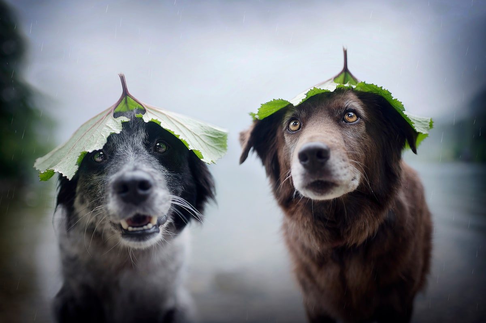
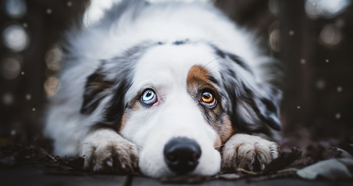
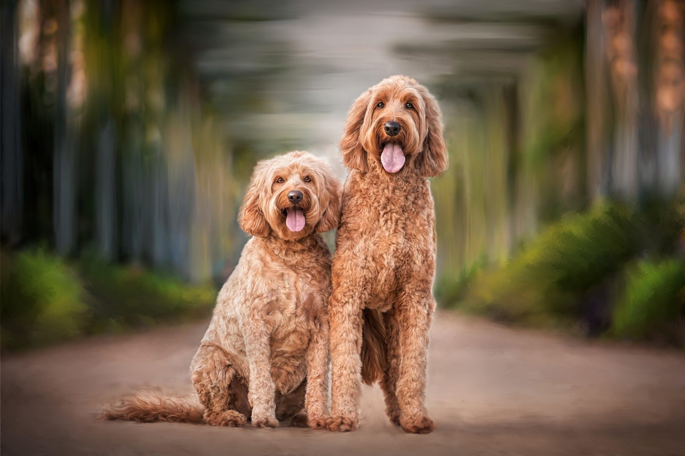
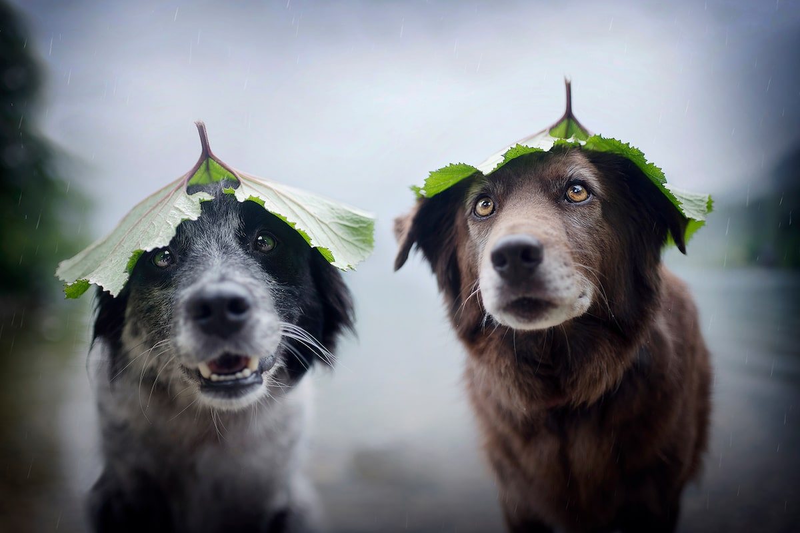
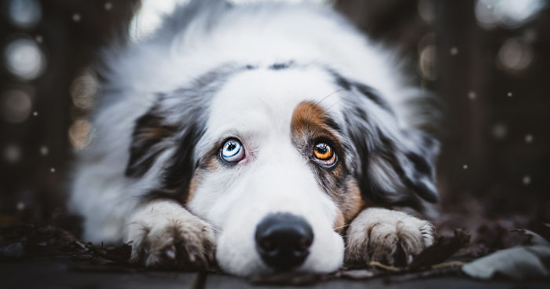
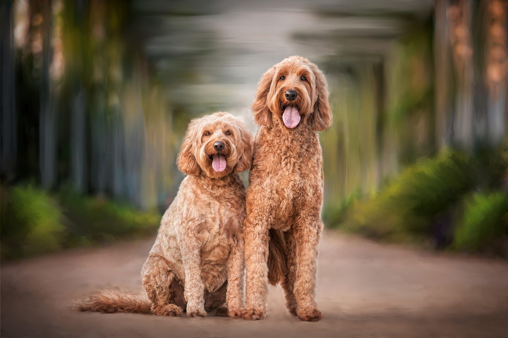

Dogs were possibly the first tame animals in the world. They've been accompanying people for at least 20,000 years and probably as much as 40,000 years. Scientists typically believe that all dogs, domestic and wild, share a common wolf ancestor based on their colours and behaviour.
Dogs are also referred to as "man's best friend" because they blend into human life. Man applies to the human being. Dogs can serve people in a variety of ways. For example, there are guard dogs, hunting dogs, herding dogs, blind guide dogs, and police dogs. There are also dogs trained to smell diseases in the human body or to locate explosives or illicit drugs. These dogs also support the police in airports or in other places. Sniffer dogs are also trained for this function. Dogs were also sent to outer space by the Russians, a hundred years before any human being. The first dog to be sent was called Laika, but she died within a couple of hours.
Today, humans have bred hundreds of various domestic dog breeds—some of which may never have survived in the wild. Despite their many shapes and sizes, all domestic dogs, from Newfoundland to Pugs, are members of the same species.
There are at least 800 species of dogs. Dogs whose ancestors were the same breed would still be the same breed: these dogs are either purebred or pure pedigree dogs. Dogs of parents with various races no longer belong to one breed: they are called mutts, mixed-breed dogs, hybrids or mongrels. Any of the most common breeds are sheepdogs, collies, canoes and retrievers. It is becoming popular to breed two separate breeds of dogs together, and to give the new dog's breed a name that is a combination of the parents' two names. A puppy with a paddle and a pomeranian as a parent could be called a pomapoo. These kinds of breeds, instead of being called mutts, are known as dog breed builders. These dogs are typically used for prize competitions and designer shows. They may be guide dogs.
Dogs interact in a variety of ways. Scent is one method, the other is physical presence. Place, movement, and facial expression of the body also send a clear meaning. Many of these signs are often familiar to people, such as the delighted tail-wagging of a joyful dog or the bared teeth of an angry or endangered species. Vocally, dogs interact in a cacophony of noises, including barks, growls and wines.


 




